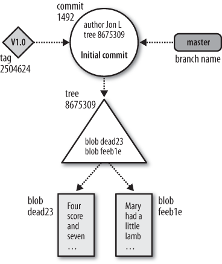

This post will cover the basic concepts of Git from a high-level perspective. It will touch the object store and the index, along with touching on how objects in a repository are stored. The next post will then cover the usage of the Git CLI.
Repository
A Git repository has 2 main storages:
-
The object store This storage is used to store the actual data, commits, etc. for the repository and is a permanent record of all the changes to the repository. This is efficiently copied across when cloning an existing repository to provide an exact duplicate of not only the data but the whole history.
-
The index This is a temporary store which records changes that have yet to be made to the repository but have been staged.
We’ll look at these in more detail now
Object Store
The object store portion of the repository stores the 4 main atomic types of objects that Git uses. These are:
-
Blobs - The contents of a single version of a file is represented as a Blob (a contraction of “binary large object”). A blob is simply the bytes of the file, along with a hash of the contents. Git doesn’t store any metadata along with the blob here, but that’s stored in other structures within the object store.
-
Trees - A tree is the information about 1 level of the directory structure. It contains references to all the blobs for the files in one directory, along with their path names and some metadata. It may also refer to child trees in order to build up a complete hierarchy by following the root level tree.
-
Commits - A commit object contains the author name/email, along with the commit data and the message that was provided to the log. Each commit points to a single tree object which is the root tree that allows the whole state of the repository to be reproduced for a given commit. Additionally, every commit except for the initial commit will have one (or more - in the case of branch merging) parent commits which allows the software to traverse backwards through the commit chain.
-
Tags - A tag object is an arbitrary string, usually human readable which is assigned to a specific object to allow for it to be referenced by a more readable string rather than the hash that’s generated for the object. This is usually used to give certain commits descriptive names, such as for assigning releases.
The Index
The second storage in a repository is the index, which is a temporary binary file that captures a version of the project’s structure at some moment in time. This could be a reference to a given commit (from which we can traverse the tree objects and the blob objects to recreate the directory structure of the whole repository).
The developer is allowed to add and remove changes to the index in incremental steps, before finally applying the contents of the index to the object store.
When one runs commands such as add, rm, or mv the changes are staged in the index in a quick and efficient way.
The more expensive persistence of the index is done only when the developer commits those changes to the repository.
Therefore the index is a cache of sorts that allows adding/removing/restoring files as needed in a staging environment before finally committing the index to the repository, resulting in the more heavy processing required.
The index also plays an important part in merges, since it can store multiple copies of the same file for merging purposes.
Hashing
Every object in the object store in Git is referenced by a unique identifier that represents it, and it only.
In the case of Git, this identifier is the SHA-1 hash of the contents of the blob.
Therefore the object store is basically a hash map that allows efficient retrieval of an object from the store given its unique hash of the contents.
This is different to the way that most source control software will store and retrieve files. In others, the files are indexed by file path derived from the directory structure on disk. However Git indexes by hashing the content of the files, meaning if you have two hashes that are the same, you can guarantee that the contents of the blob are the same.
Additionally, and more powerfully, since Git stores the entire history as referenced from a head (most recent) commit, and this commit is an object in the store, just like the others, the hash of a commit or tree is derived from any child trees or commits.
This is a very powerful statement because it means that if you have two identifiers of two commits, and they are the same - not only do you know the same changes were made in those commits, but you know that the entire history of the repository was the same in both cases too.
Pack Files
Git stores the complete contents of each version of every file, since it’s deriving the identifier of the file version from the contents of the data itself, it can only operate on entire and complete file contents.
But how can it store many different instances of the same file when they only differ by a few characters?
Git solves this by using pack files, and it achieves it by storing the full contents of a certain blob, and other blobs that are close to it in content are stored alongside that as a diff.
Thus if you have version A of a file, and version B of a file which only has a single character changed, then the pack file will have the full contents of A, along with a diff with the changed character.
However, because Git indexes data by the content itself, and doesn’t care about directory structure, it can store different blobs that are in no way related together in a pack file, as long as they’re close to each other in nature.
In order to be able to locate an object within a pack, Git will store the original SHA-1 hash for each alongside either the complete content or the delta for that content.
Object Store Diagram
A picture is worth a thousand words, as the saying goes, so below is a diagram of a sample object store - showing how blobs, trees, commits, and tags all reference one another.
In the diagram, the blobs, being the raw data, are located at the bottom of the diagram. Blobs are standalone objects and don’t reference anything, but are referenced by tree objects. These are represented as a rectangle.
Tree objects can reference blobs, and other child trees, along with metadata identifying the path on the user’s disk so that it can be reconstructed in the same way on disk. These are represented as a triangle.
A circle represents a commit here, which may have one or more parent commits, allowing us to traverse backward through history (the root/initial commit has no parent), and points to a single tree, that represents the entire state of the repository at that commit.
Tags point to a commit, and are represented as a parallelogram.

As you can see in the diagram, Git stores references from child commits, to their parents. This makes it super easy to add a new commit, as you make the commit, and point it to the previous one - then the new commit becomes the head.
From the diagram, we can see that commit #11235 has information about the author, the commit message, and the timestamp. Additionally has a reference to the parent (initial) commit.
The commit object references a tree that in turn, references two blobs, and a child tree referencing a blob.
The initial commit references a tree that references two of the same blobs (dead23 and feeb1e) as the new one, but doesn’t have access to tree #1010220.
Therefore we can see from the diagram that the new commit added a file into a subfolder, but all the other files remain the same. Because Git indexes files by their content only, which is immutable, it’s able to refer to the same instances of the blobs.
Accessing the object store
You’re able to access any given object from the object store by it’s SHA-1 hash, which as we’re now aware, is the ID of the object (and the hash of the contents).
We can do this with the cat-file subcommand. The following is an example of using it to retrieve a data blob from the object store:
git cat-file -p 2d10
Text inside the file
Note that we don’t need the full identifier of the blob, just enough of the prefix to allow Git to locate it for display.
We can access any object from the store this way, for example accessing a commit
git cat-file -p 7a97
tree 17efabebf0f96829e91a5b9dc358b2e2c2eec05e
parent 8bddb3945ff1f5978c57fc298c2ab3ba88945a83
author Robin Firth <theforgottenmaster@googlemail.com> 1636230599 +0000
committer Robin Firth <theforgottenmaster@googlemail.com> 1636230599 +0000
Added file only on branch
And we can see that the commit has a reference to its tree object, parent commit, and the author metadata.